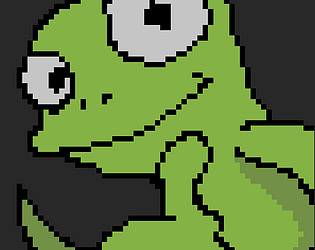
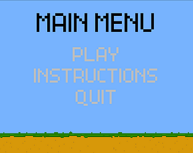
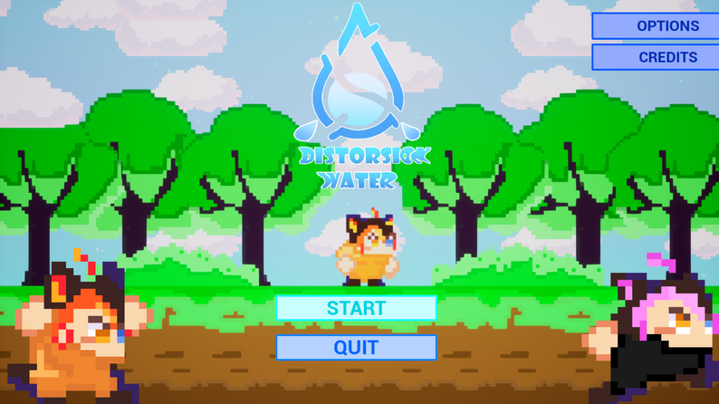
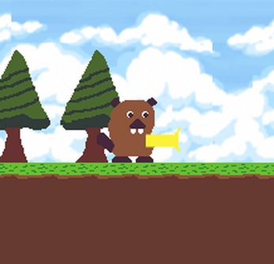
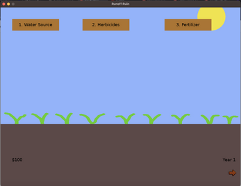
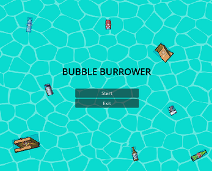
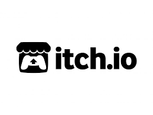
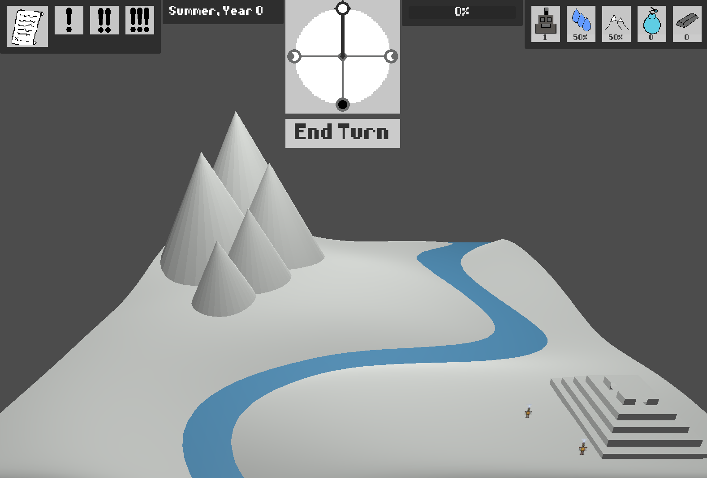

Aqua Arcade Game Jam

The 'Aqua Arcade Game Jam was a collaborative effort between Secure Water Future and the UC Merced Game Development Club (GDC).
This 48-hour event aimed to ignite students' passion for game development, offering them a platform to design their own games and propel their future careers in the gaming industry.
UC Merced and Merced College participants worked in teams of up to five, utilizing their preferred game engines to create games with an educational twist, focusing on hydrology. This event fostered teamwork and innovation and highlighted the intersection of gaming and environmental education.
UC Merced | 5200 Lake Road, Merced, CA 95343
Thank you for participating in this years' Game Jam! Keep an eye out for future announcements!Here are some games students made!
Remediation - 1st Place

Art & Programming: Sean Thomas Edison Grant,
Main Programming: Richie Friedland,
Music: Serge LoBach, Flex: Damian Eaton
Created by: Sean Thomas Edison Grant, Richie Friedland, Serge LoBach, Damian Eaton
AquiferMine-Game - 2nd Place

Embark on an exhilarating journey of discovery in our game where players become expert aquifer explorers! Dive deep into the earth's layers, uncovering hidden aquifers while facing a series of thrilling multiple-choice questions. With each correct answer, you dig deeper, unlocking new challenges and uncovering valuable water resources. Test your knowledge, hone your skills, and unearth the secrets of aquifers to emerge victorious in this engaging and educational adventure!
Created by: Hikaru Kurusu and Zion Koundou
Distorsion Water - 3rd Place

2D platform game in which you embark on an adventure to prevent the pollution of the river that supplies water to the village. To achieve this, you will progress through different levels to activate magic buttons that will restore the river to its former state. To accomplish this honorable task, you will have to navigate through a distortion of reality to continue advancing.
Created by: BeGe
Project Beaver - Judge's Choice

My first from scratch game, so it isn't finished. Hopefully, I will complete it after the jam. Thank you for playing.
Created by: Kevin Flores
Runoff Ruin

Game showing the tradeoffs and effects of certain watering practices in a simplified manner.
Created by: Lily Smith
Bubble Burrower

Game about a mole digging tunnels to mitigate runoff! Try to avoid trash while digging tunnels for your water to travel through.
Created by: Cassandra Chen, Claire Hallock, and Jorge Vega
Save the Aquifers

File is a zip file , that will require user to download Qt Creator to run the game. Step 1. download and setup Qt Creator Step2. Download zip file and extract the context folder that is title "CSE165_project-game" Step3. when you open the folder you should see a file called "CSE165_project-game.pro" click on it and it should start to load project on to the Qt Creator application Step4. just click on the run icon in the bottom left of the screen and the game should start.
Created by: Daisy Hernandez
H2Outpost

The Olmechas are a space-faring civilization consisting entirely of automatons. They’re currently exploring new solar systems to find some place to find home. To help expedite the process, instead of bringing their entire mothership to each potential planet, the Olmechas created the Pioneer Initiative, in which a small group of robot scouts are sent to live on the nominated locations for a trial period. The scout squadron is tasked with collecting metal from the planet for the creation of a beacon. If the pioneers manage to complete this goal, the Olmechas’ primary ship will arrive at the planet and settle there because the completion of the beacon proves that the land is sustainable. You play as Poseid-1, the leader of team AQUA from the Pioneer Initiative. You are tasked with managing the settlement on the planet designated Gaia, which is the most promising prospect for a new home in a long time. Your job is to make the final decisions on the most important choices for the colony, ranging from policy changes for improved production to responses to unprecedented events. While this planet is bountiful, team AQUA will soon discover that it is also incredibly fragile– so its fate is entirely in your hands. Currently, the game is merely a Proof of Concept. We weren't able to have our full vision realized during the alloted time period, but the jam was fun nonetheless. :]
Created by: Max De Ornelas and KillgoreAlpha